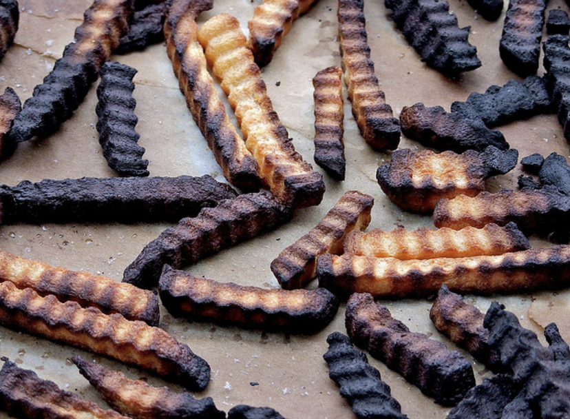
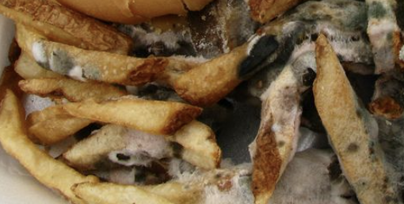

Our mission: We want to protect potatoes and ensure ethical practices in their preparation!
Over-mashing potatoes is harmful! It destroys the texture and integrity of the potato, and it's just wrong. Plus, big chunks of mashed potatoes are disgusting. We are also fighting to put an end to horrible French fry recipes that make them tasteless and ugly, and we're taking action to stop these bad practices. Together, we'll make potatoes great again!

